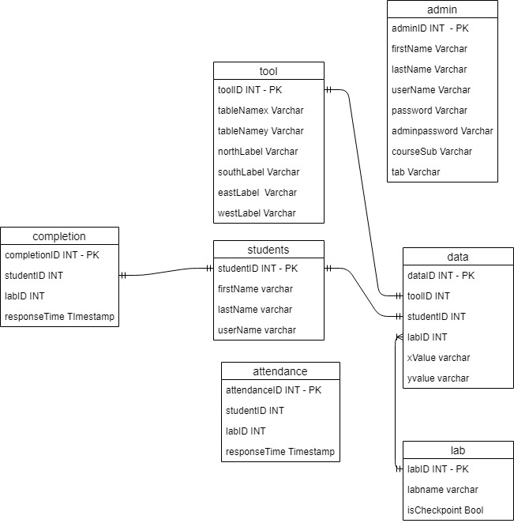
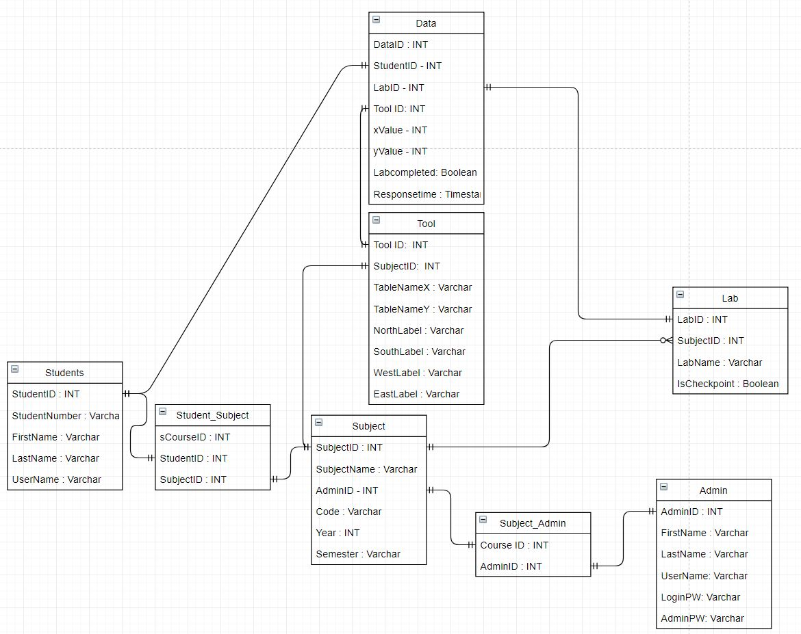
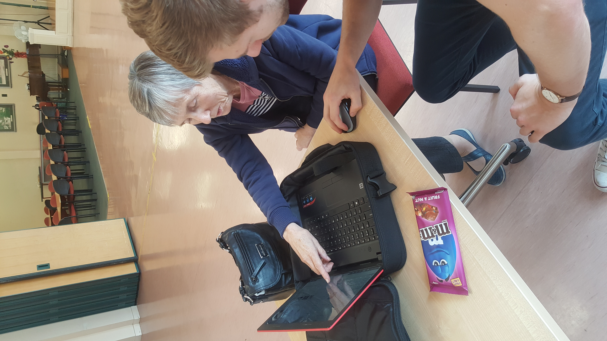

Project 1 - Checkpoint Tool
Timeline
Project Overview
Our first project for the Web Development team is to overhaul the Student checkpoint lab tool currently in use for students taking the Programming 1 and Web 2 papers in the B.I.T . The clients(Dale and Krissi) wanted the new tool to improve on the functionality the original tool had and add features such as fixing existing functionality of the original tool, giving the lecturer a notification on a mobile device when a student needs a lab checked off, provide a map to show which student is using which machine, dynamic creation of tools/questions, the tool's general functionality to be heavily responsive as in the future the tool will be used by other lecturers in other Polytech departments. The new tools needs to be thoroughly tested as it will be used by lecturers who may not be proficient with computers.
Project Introduction
The first week of the semester was mostly an introduction to the course, a focus on the individual teams and projects they are responsible for. Being that I want to pursue a career in web development I chose to join the web development team as I would develop my skills further and be able to showcase a final product for my portfolio post B.I.T. The Checkpoint tool project appealed to me the most out of the web projects because it was a similar project to the final assignment we completed in the Web 2 paper and I was familiar with the structure and logic involved and could use this prior knowledge to help develop the new Checkpoint tool to an even higher standard. In the early weeks of the project Adon gave us a brief idea of what the project would require but could not be sure as we still had to meet with the clients Dale and Krissi and find out first hand what was needed for the project. Until this time was arranged , Joe and I evaluated the current tool and began to brainstorm our own ideas that we could bring to the client meeting.
Client Meeting
We met with Dale and Krissi in the second week of project where we discussed the scope of the new tool. Dale needed the new tool to be more modular to be able to easily create new Courses, admins and tools as the plan is for the tool to be used by other lecturers outside of the degree. Other functionality needed includes security fixes concerning students being able to predict the lecturer password needed to sign off labs and implement a universal sign in via the Onedrive sign-in
We were also tasked with implementing a link between the students' machines and a mobile device owned by the lecturer that notifies when a student needs marked off and include information such as student name and current machine ,this was to assist lecturers during early weeks of semester where students' faces may not be familiar. We were given the files to the original project to use as a template and give us an indication of the structure and logic required. After the meeting Adon told us it would be more practical to re write the back end of the application with Javascript using node.js as this would make it easier to combine with the other functionality needed in future. Following the interview with our clients I decided it would be a good idea to create a Github repository dedication to storing and tracking the progress of the Checkpoint Tool. This was because we had learned that this is a good working practice from the Software Engineering paper, where implementing these Agile techniques considerably increased productivity.
Volunteering #1
My first volunteering session was to assist with repurposing broken or incomplete computers for the Polytech. We were briefed by Hamish that A certain stack of computers needed their hard drives replaced and that another set needed to be re imaged with the OP student images. Using knowledge gained from The PC Maintenance course I began to remove and replace the hard drives of the affected computers. After the stack was finished i realized I had little knowledge of how to re-image a computer I decided to leave when more advanced students turned up as I wouldn’t be of much help with the task. On reflection I realize I should have stayed on working and learning how to do it from the other students, but felt like i would have been a burden if time became a constraint.
Database Restructure
Because of the new scope of the project, it was necessary to redesign the the existing database to better suit the purposes of the new project. We decided I would take this task while Joe would work on the front-end functionality of the tool. The structure of the original database is as below. 
Over the next few weeks I redesigned the database to solve some of the foreign key relationships that were missing in the original and addressed some of the relational problems by implementing the Student_Subject and Student_Admin joining tables. Another consideration was to make the database as simple as possible, this included removing the Completion table and replacing its functionality by incorporating attendance recording in the data table with the lab completed field. The database needed a Subject table to manage the Subjects or courses in a degree. This table is important as it show the students taking these papers, the lecturers teaching these courses, the labs involved in each paper and a reference for the tool table. .These changes were incrementally applied to the above database over the next few weeks and with Adon's supervision and wisdom were implemented with good database practices. Below is the final database schema as it was implemented in the tool.Volunteering #2 and #3
My second volunteering session was helping seniors at Age Concern with device problems. These problems were usually simple to fix e.g connecting to wifi, deleting a picture or changing a password. The tasks were trivial to fix but made me change my mindset to change from just knowing instinctively how to fix a problem to being able to break the problem down to its most simple level and explain the logical process to fix the problem. eg going into the settings menu to find the display setting to be able to fix the problem of the screen brightness being too dark etc. My 3rd volunteering session was also at Age Concern and was the same as the other session so not much to write about this session.Below is a picture of me helping a senior during the session.
Collaboration
Now we have a database designed to work with the checkpoint tool and Joe having finished a working version of the D3.js input graph tool, it was time to combine the front and back-end and create a tool that could record user input and write the result to the MariaDB database. I achieved this by creating a post route "D3ToolSubmit" where I created a data object for the data table and filling the fields by returning data recently stored from the tool's input form and SetXY method I had defined to return the x, y values that couldn’t be set at run time. After defining the object ready for the database I made a SQL update query to insert the object into the database where the data stored successfully. I decided this would be a good point to backup all my code in local files to the Github project repository as having this working tool would be a good place to roll back to if we have any functional problems or data loss in future.
Passport Authentication
The next requirement requested by Adon was a login system handled by the node.js module Passport. The process involved included authenticating the user by a Passport login-local strategy and then being redirected to the Otago Polytechnic Single sign on login system , if this is successful then the user is redirected to the admin area of the tool. As I was unfamiliar with how this process worked, I began researching Passport and how to configure passport to work with the current application. I decided to create a new application for the Passport config to keep the two apps modular and configure them when they were completed to avoid conflicting errors following along with tutorials I created a Passport test App that could authenticate a user with a login local strategy. At this time Adon showed me a Moderation application that had a similar build to what I was trying to achieve with the Single sign on login. I was made a maintainer of this project to be able to review and modify this code for our project. Until this point the Checkpoint Tool has only been working locally and it was time to make the tool live. To do this I sent tickets using the Zammand Helpdesk requesting a dedicated ip to host the web application and another ticket to allow our Checkpoint Tool through the OP Single-sign on. The ops team responded within a few days with the new IP but are currently still working on the OP sign-on exception. Going into the final week Joe and I decided to back up and combine all our local files to the master branch of the GitHub repository so we will have no issues with data loss going into the next semester.